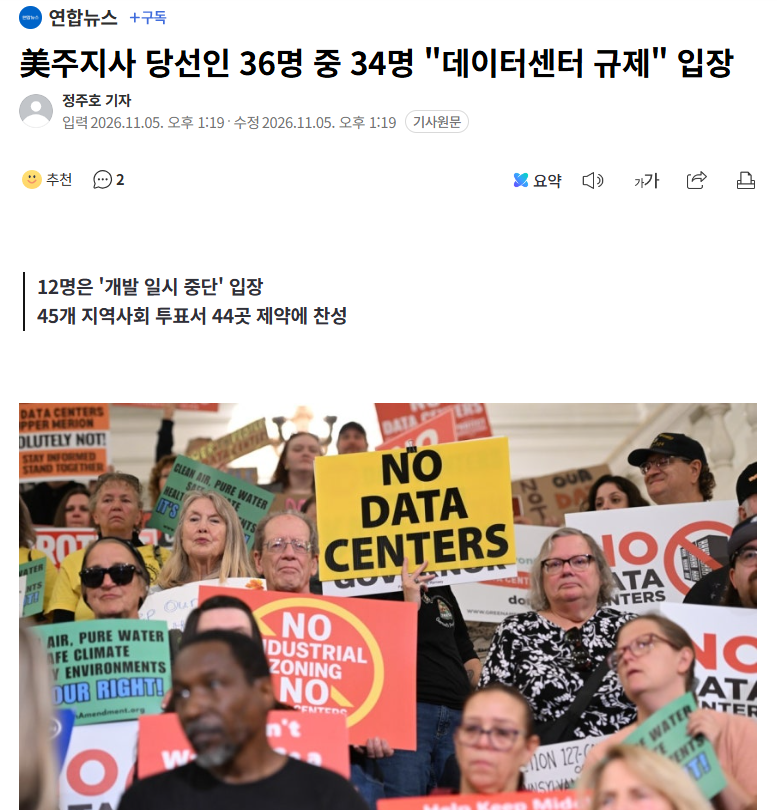
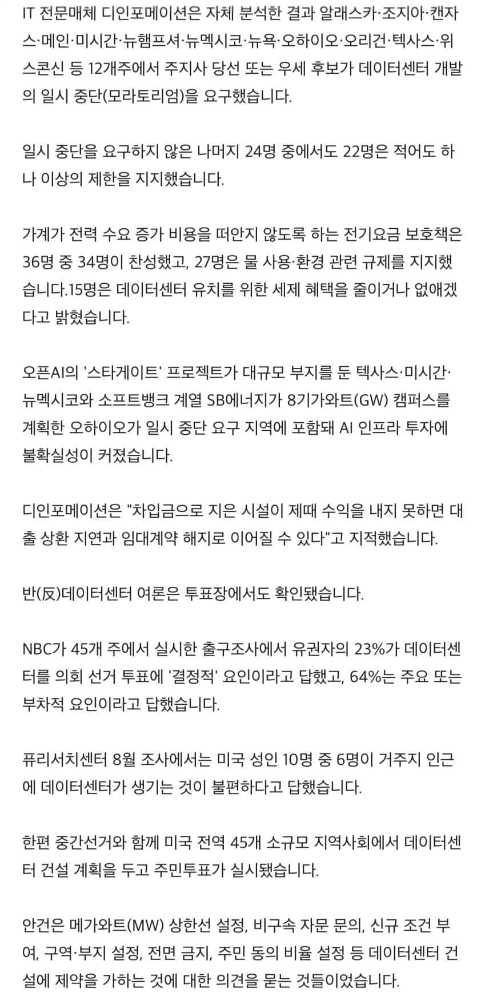
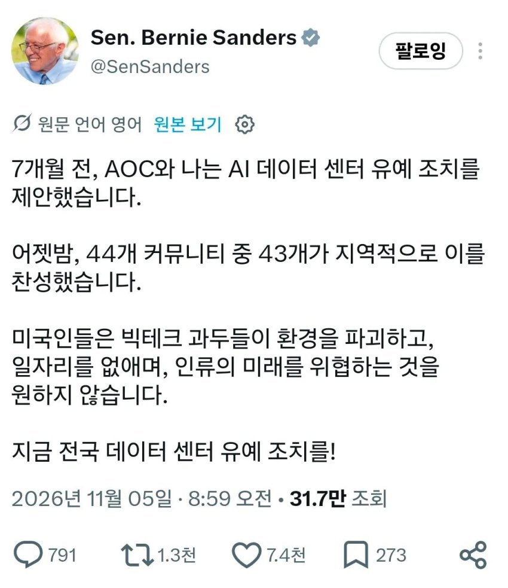
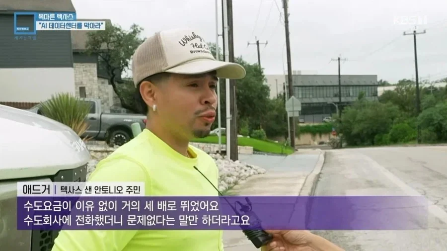
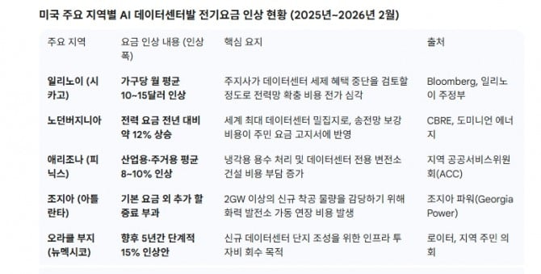
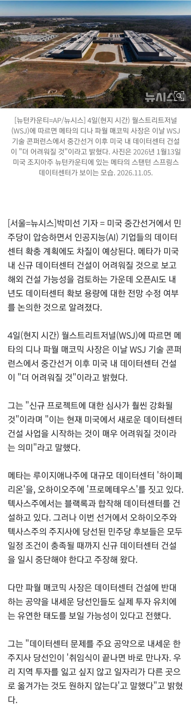
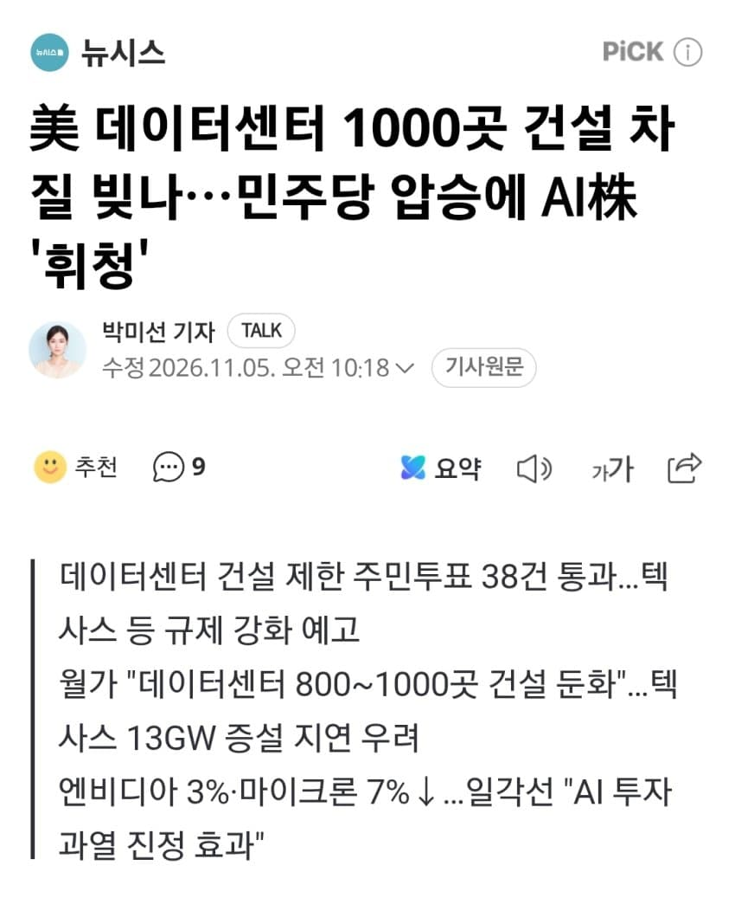
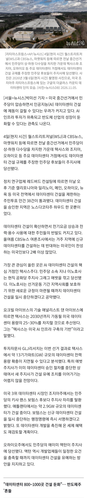
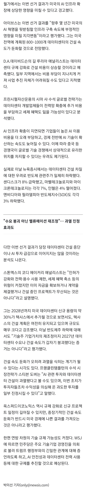

- 美주지사 당선인 36명 중 34명 "데이터센터 규제"


♪



데이터센터떄문에 폭등한 수도세,전기세를 주민들이 같이 부담하는중
정작 주민들은 혜택없음
- 메타 "美 밖에 데이터센터 지어야 하나"…오픈AI도 민주당 압승에 고심






<데이터센터 (창고) 입지 조건>
1. 전력이 풍부한 곳
2. 소금기 없는 물이 풍부한 곳
3. 주변에 사람이 살지 않는 곳
댓글
댓글 보관 대기 중입니다. 원문 응답 오류가 있으면 다음 실행에서 다시 수집합니다.